真实的亲和力
图形源于真实生活，并进行适度风格化提炼；避免纯粹抽象符号，在保持辨识度的同时呈现温暖、可触摸的质感。
系统图标用于统一功能表达、状态反馈和跨设备识别，确保不同尺寸与表现形式下保持清晰一致。
实物图标以真实物体为基础，通过统一光影、克制色彩和品牌化造型建立温暖、清晰且一致的视觉语言。
图形源于真实生活，并进行适度风格化提炼；避免纯粹抽象符号，在保持辨识度的同时呈现温暖、可触摸的质感。
所有图标处于统一的光源环境，以一致的光影方向塑造体积感，并建立品牌视觉世界的秩序与真实性。
色彩服务于品牌，通过标准色板传达层次与情感，确保整体和谐并保持品牌独特性。
光影对比更强烈，造型更硬朗，色彩更沉稳。体现专业与可靠。
核心实物图标以 256 × 256px 为基准尺寸，并在同一品类中保持统一朝向、角标位置和光影条件。
| 规范维度 | 基准值 | 应用说明 |
|---|---|---|
| 画布与尺寸 | 256 × 256px | 主体居中并保留稳定安全区 |
| 图形视角 | 四分之三侧视角 | 同一品类使用一致视角，避免明显透视变形 |
| 光线与色温 | 左上角45°光源/冷白光 | 高光柔和、明暗自然过渡，避免死黑 |
| 阴影与倒影 | 光影对比强烈（约 60%） | 阴影更加清晰，营造出一种坚实有力的感觉 |
| 辅助角标 | 右下角 | 位置与比例统一，不遮挡主体识别特征 |
采用左上角 45° 定向光源，通过高对比度与清晰过渡塑造硬朗坚实的产品体积感。
位于物体的左上边缘，形态清晰。
明暗交界线过度自然，反射光聚集在物体的右下部分，由环境光或主色光反射柔和的暗部光。
光影对比强烈（约 60%），阴影更加清晰，营造出一种坚实有力的感觉。
通过稳定的侧视视角与定向强光塑造体积感与专业沉稳的产品特征。
核心视角为四分之三侧视角，建立更具空间立体感的形态架构。
依靠左上角 45° 强烈光影对比塑造坚实有力的体积感与专业质感；同一品类保持一致视角。
底层网格、基本单位与安全区规范。
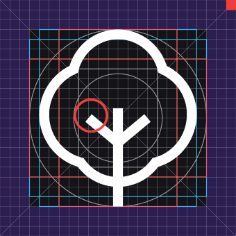
图标网格以 24×24 的比例为基础。此网格不建议使用像素（px）、密度无关像素（dp）、毫米（mm）等特定单位。它通过设置一个基本单位 “a” 来解释各个单位的相对比例。
无论制作任何图标，都必须在上下左右各保持 3a 的安全区域。实际图标的尺寸设计不得侵犯紫色安全区域。
图标线条的粗细以 24 × 24 网格系统为基准，设定为 1a。
视觉平衡与关键线 (Keylines) 形状规范。
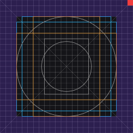
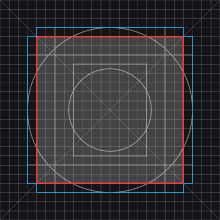
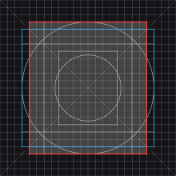
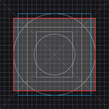
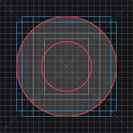
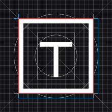
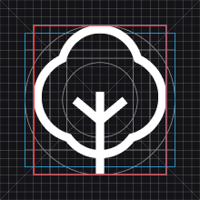
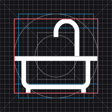
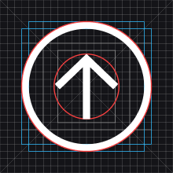
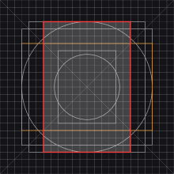
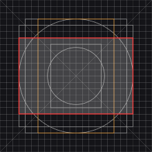
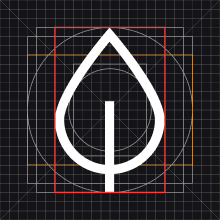
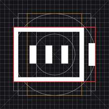
所有图标均可以按照标准-正方形、标准-竖向、标准-横向、标注-圆形制作。特殊特征外形的图标按照特殊-竖向、特殊-横向制作。
外环直径限制与核心内元件的留白尺寸标准。
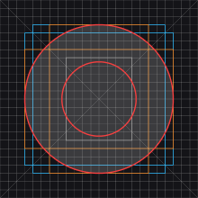
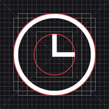
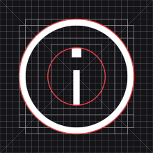
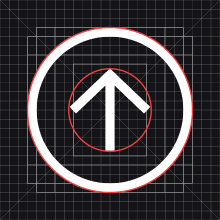
圆形图标边缘不超过大圆形，内部元素不超过小圆。
复合图标与角标、数值标记的位置与大小约束。
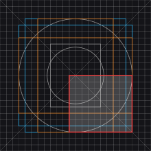
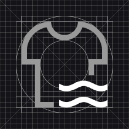
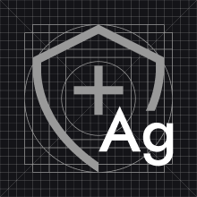
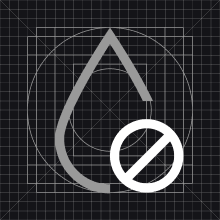
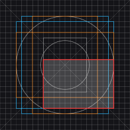
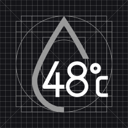
辅助符号的大小为主符号的四分之一。辅助符号默认放置在右下角，即使在特殊情况下，辅助符号的面积也不能超过主符号面积的一半。
标准描边粗细与手指触控热区（Hit Box）的尺寸规定。
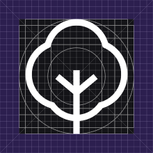
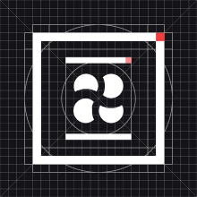
核心基准：全库统一基于48×48dp标准大小为例，图标标准粗细度为2dp。复杂内容图标，内部线条粗细度为1.4dp。交互热区（Hit Box）必须保持48×48dp（物理尺寸约8×8mm，符合人体工学成人指尖最小接触面积）
针对不同尺寸智控彩屏与固定屏的缩放与物理尺寸适配标准。
1. 智控彩屏（包括 TFT、OLED）：
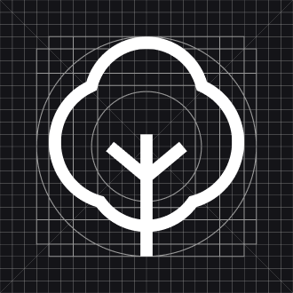
20寸以下所使用图标常规大小范围(图形区域)：32dp~48dp。
极限大小范围(图形区域)：最小不低于16dp。
大尺寸20寸以上智控屏图标：最大(图形区域)不得超过96dp。
所有尺寸图标一律在 Figma 中使用等比缩放生成（描边跟随同比例放缩）。
2. 固定屏（包括 LED、VA、LCD）：
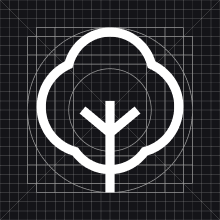
图标常规大小范围(图形区域)：8mm×8mm~15mm×15mm。
极限大小范围(图形区域)：最小不低于4.5mm。
图标尺寸（图形区域）在4.5mm×4.5mm~12mm×12mm时，描边等比放大/缩小。
图标尺寸（图形区域）大于12mm×12mm时，描边等比放大后可根据实际情况适当改细，但不可加粗。